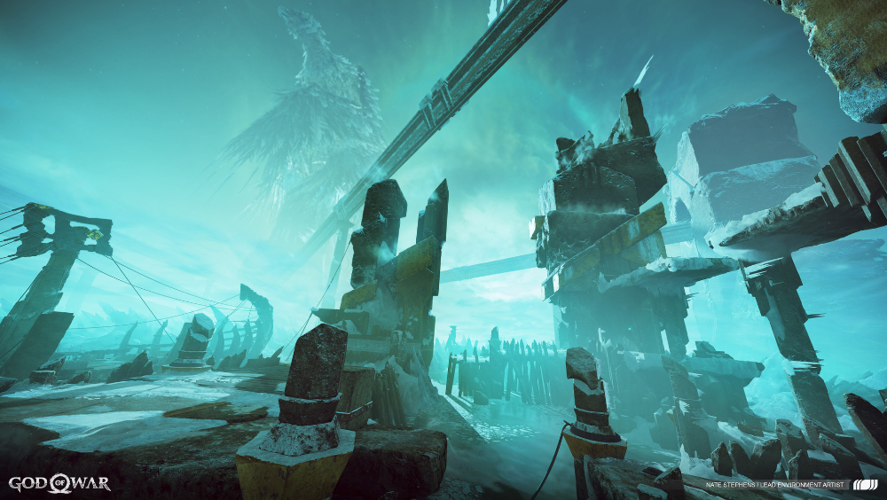

Helheim
 Este reino é o lar de daqueles que morreram em desonra. É governado pela Deusa da Morte, Hel, e é conhecido por torturar seus habitantes com seus próprios passados através de ilusões de seus crimes cometidos.
Helheim é um reino sombrio de frio extremo, tanto que até os deuses Aesir temem o reino e evitam visitá-lo a qualquer custo. O próprio Odin, na verdade, não pode sobreviver ao frio brutal do reino. De fato, se alguém cruzar a Ponte dos Condenados, ficará preso para sempre, pois não há caminho de volta.
Após a Desolação, a doença corrompida infligindo os Nove Reinos e a prisão das Valquírias, Hel está transbordando de almas. Sem as Valquírias para separar as almas, a cidade de Helheim além da Ponte dos Condenados está sobrecarregada. Isso resulta em um transbordamento de mortos em Midgard. Esses mortos-vivos são conhecidos como Helteadores.